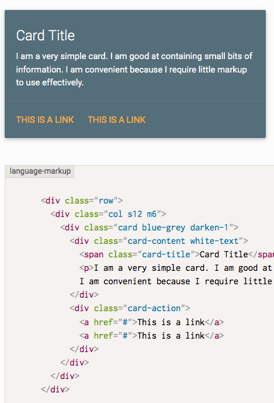

The dangers of CSS frameworks
Belén Albeza
Unsemantic, bad HTML

Rules you are not using
Hard to override rules
- Very specific selectors…
- …very prone to get cursed with
!important
Decisions you might not like
<span class="label label-warning">
Code your own HTML and CSS
Specially if you have a custom design!